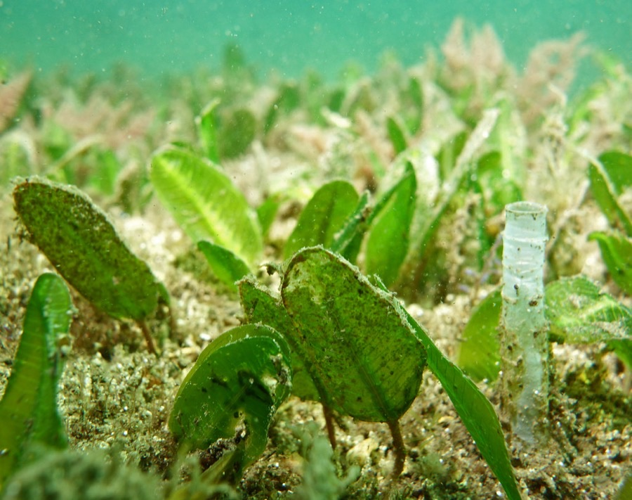
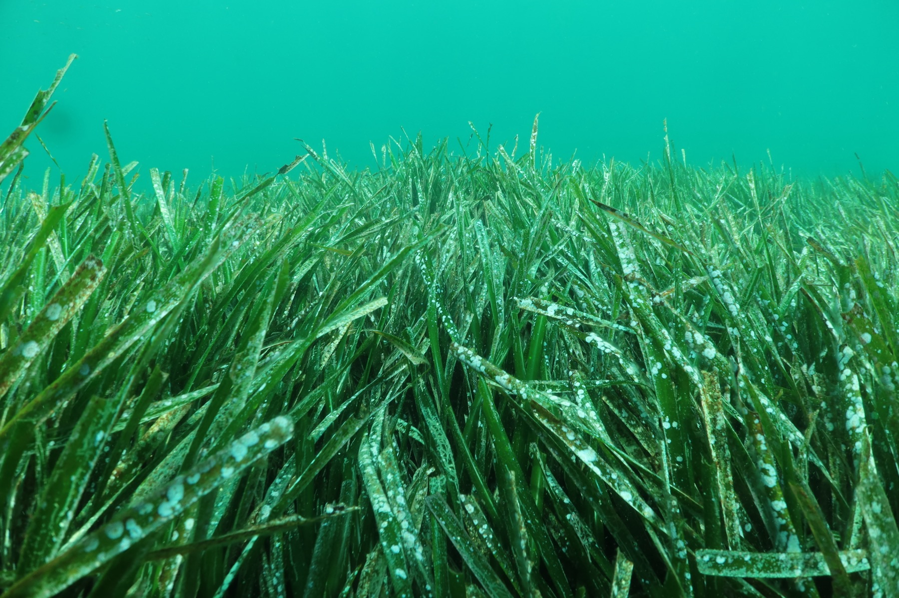
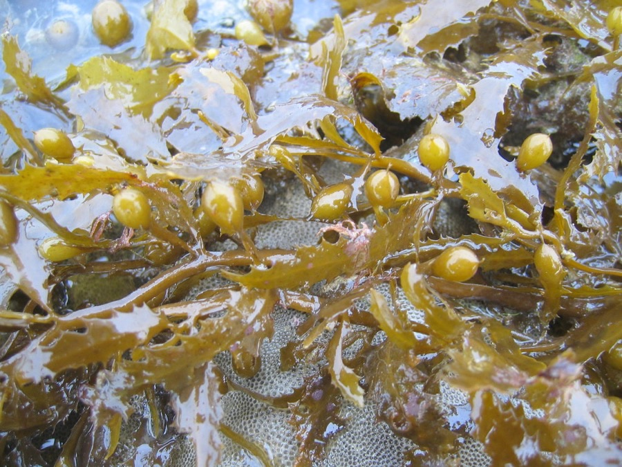
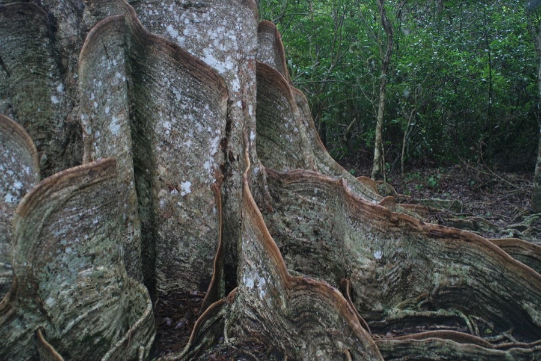

海草
Seagrass
- 開花植物，有真正的根、地下莖與葉，葉面可見葉脈
- 靠開花、結果、種子繁殖，可無性克隆擴展
- 完全浸沒仍能完成生命史
- 需要清澈淺水與沙泥底質

它們不是海藻，而是能在海裡開花的有花植物。它們看來柔軟，卻固定海岸、儲存碳、過濾海水，也為無數海洋生命提供第一個家。
大部分人把海中所有綠色植物都叫「海藻」。但海草是唯一能完全浸沒在海水中、仍然完成整個生命史的有花植物——它會開花、結果、結種子，也有真正的根、莖和葉。
正因為要進行光合作用，海草只能生長在清澈、淺水、沙泥底質的地方。光線到不了的地方，就沒有海底草原。



先點選一張卡，再點下方的分類箱；分對了，卡牌就會歸位。
海草沒有外殼、沒有尖刺，看似脆弱。但當它們長成一片，就會改變水流、抓住泥沙、鎖住碳，並撐起整條食物網。點開下面四個圖示，看看它們分別在做甚麼。
拖動滑桿，看看一片海草床面積變大時，它「做的工作」會怎樣變化。
以下數字根據文獻常見的碳埋藏速率區間（約 45–190 克碳／平方米／年）作示意換算，並非實地測量結果；實際數值會因地點、季節與海草種類而異。
以每平方米每年 45–190 克碳換算，即約 16.5–69.7 公斤；面積越大，累積效果越明顯。
香港的海草床通常面積不大、分布零散，而且常常緊貼紅樹林與泥灘生長。牠們容易被忽略，卻正好落在最容易被人踏足的海岸線上。
本地有記錄的海草包括貝克喜鹽草、喜鹽草、川蔓藻與矮大葉藻。其中大嶼山北岸的䃟頭，擁有全大嶼山最大面積的海草床，同時記錄到喜鹽草與矮大葉藻——這是全頁最值得記住的一個地名。
香港的海草床多與紅樹林、泥灘、鹹水沼澤交織成一個整體生境；保護海草，往往等於保護整條海岸線。䃟頭泥灘的部分範圍已被列為具特殊科學價值地點。
翻開卡片，看看誰把海草床當成家、食堂或育兒所。東涌河口的泥灘、紅樹林、鹹水沼澤與海草床連在一起，同時支撐著中華鱟、圓尾鱟與舒氏海龍等物種。
以上為常見於香港海岸生境的代表物種；實際出現與否會隨季節、潮汐與地點而變化。觀察時請保持距離，不要捕捉或餵食。
海草床面對的威脅，大多不是「有人刻意破壞」，而是日常活動一點一點累積的結果。左邊是壓力，中間是影響，右邊是可以改變的地方。
制度上，香港已把海草床納入生態評估的要求；部分具代表性的泥灘（包括䃟頭）被列為具特殊科學價值地點，另有海岸保護區與郊野公園等不同層級的保護。但要留意：保護區界線以外，海草床仍可能受周邊工程的泥沙與水質影響。
不需要成為科學家，也可以保護海草床。下面七件事，選你願意做的；這張承諾卡只會儲存在你自己的瀏覽器，不會上傳。
每選一項，圓環就多一格。不用一次做完，先從最容易的那項開始。
八條選擇題，每題答完會即時解釋。完成後會給你一個稱號。